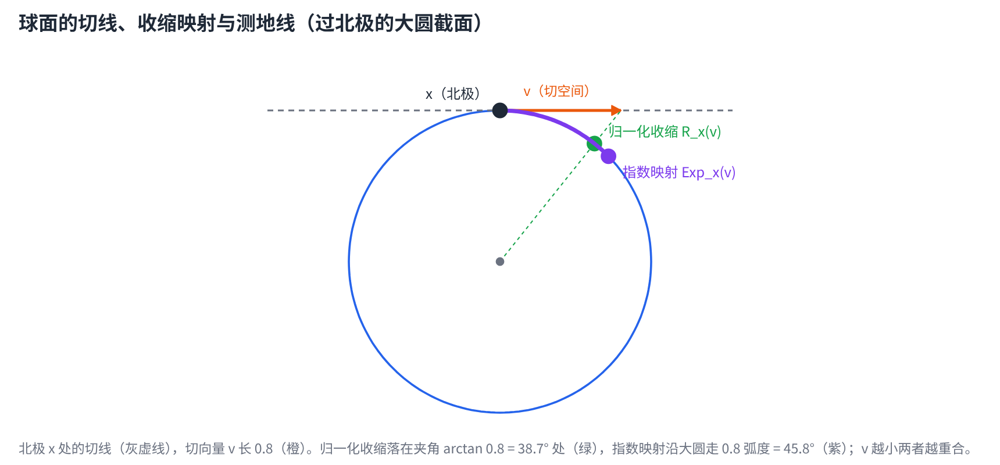
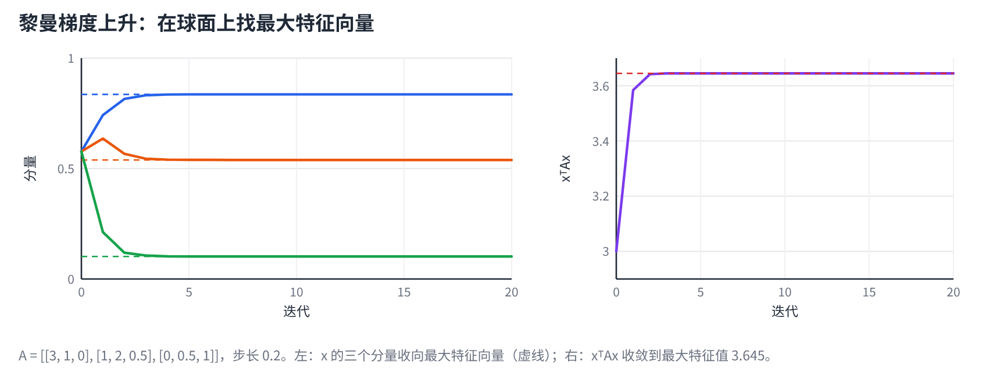
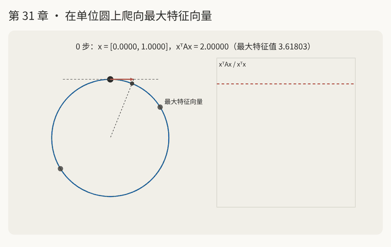

第 31 章 · 微分几何与流形优化：切空间、收缩映射、测地线、黎曼梯度
本地运行
git clone https://github.com/wikieden/math-and-eval-stats
cd math-and-eval-stats/code/notebooks
pip install jupyterlab torch numpy
jupyter lab ch31_manifold_optimization.ipynb也可以下载后直接用 VS Code 打开 .ipynb 运行。需要 GPU 的章节在 Colab 里选「代码执行程序 → 更改运行时类型 → GPU」。
本章回答：参数被约束在一个"弯曲的面"上（单位向量、旋转矩阵、正交矩阵）时，梯度下降该怎么做？切空间、黎曼梯度、收缩映射各是什么？测地线距离和直线距离差多少？和第 19 章的李群是什么关系？
讲解日期：2026-11-25 · 上一章：第 30 章 泛函分析入门 · 下一章：第 32 章 随机微积分
对应原文：Boumal《An Introduction to Optimization on Smooth Manifolds》math-and-eval-stats/materials/text/books/boumal-optimization-on-manifolds.txt（球面上的 Rayleigh 商例子 L876–L893；§3.6 收缩映射，定义 3.47 L2740；§3.8 黎曼梯度 L2888；第 4 章 §4.3 黎曼梯度下降，球面上的例子 L1682）
本章缩写：S² = 三维空间里的单位球面；T_xM = 流形 M 在 x 处的切空间；P_x = 到切空间的正交投影；R_x(v) = 收缩映射（retraction）；Exp_x = 指数映射（沿测地线走）；grad f = 黎曼梯度；SO(3) = 三维旋转群（第 18、19 章）；skew(M) = (M − Mᵀ)/2，反对称部分。全部缩写见 附录 · 缩写与术语表
讲解
第一步：切空间与投影（2026-11-25）
类比：站在地球上某一点，脚下那块"看起来是平的"地面就是切平面。 在切平面上可以随便加减向量、算梯度；地球本身是弯的，不能直接加。
单位球面 \(S^2 = \{x : \|x\| = 1\}\) 在 x 处的切空间是所有和 x 垂直的向量：\(T_xS^2 = \{v : x^\top v = 0\}\)。把任意向量投影到切空间：
例子：x = [0, 0, 1]（北极），w = [1, 2, 3]：P_x w = [1, 2, 0]，和 x 的内积 0。沿法向（x 方向）的分量被去掉了，那个方向会"离开球面"。
一句话：切空间是流形在一点处的"平面近似"，投影 I − xxᵀ 去掉法向分量，留下沿流形能走的方向。
第二步：收缩映射：从切空间回到流形（2026-11-25）
在切平面上走了一步 v，人已经离开球面了，要"拉回来"。两种办法：
- 指数映射：沿大圆（测地线）走长度 ‖v‖：\(\text{Exp}_x(v) = \cos\|v\|\,x + \sin\|v\|\,\frac{v}{\|v\|}\)；
- 收缩映射（Boumal 定义 3.47，L2740）：任何满足"R_x(0) = x、在 0 处导数是恒等"的映射都行，最简单的是走完再归一化：\(R_x(v) = \frac{x + v}{\|x + v\|}\)。
例子（x = 北极，v 沿 x 轴）：
| ‖v‖ | 归一化 vs 指数映射的差 |
|---|---|
| 0.3 | 8.5 × 10⁻³ |
| 0.1 | 3.3 × 10⁻⁴ |
| 0.01 | 3.3 × 10⁻⁷ |
‖v‖ 缩 10 倍，差缩约 1000 倍：两者到二阶都一致（这个例子里差是 O(‖v‖³)）。优化只需要一阶一致，所以用便宜的归一化就够。
一句话：收缩映射把切空间里的一步拉回流形，只要一阶和指数映射一致就行；球面上用"走完再归一化"。
第三步：测地线：流形上的"直线"（2026-11-25）
类比：从北京飞纽约走大圆航线，不是在地图上画直线（第 19 章 SLERP）。
球面上两点的测地线距离是夹角 arccos(xᵀy)；弦长 ‖x − y‖ 是穿过球体内部的直线。
例子：
| 夹角 | 测地线 | 弦长 |
|---|---|---|
| 10° | 0.1745 | 0.1743 |
| 90° | 1.5708 | 1.4142 |
| 180° | 3.1416 | 2.0000 |
离得近时两者几乎相同（局部看流形是平的）；离得远差别很大。用弦长当损失（比如单位向量、四元数的 L2 损失）在小误差时没问题，大误差时梯度和"真实转角"不成比例。

图 31-1 · 过北极的大圆截面：灰虚线是切线（切空间），橙色是切向量 v，绿点是归一化收缩的落点，紫色弧是沿测地线走 ‖v‖ 的指数映射一句话：测地线是流形上的最短路径；近处它和弦长一样，远处差很多。
第四步：黎曼梯度下降（2026-11-25）
三步一循环（Boumal §3.8 L2888、§4.3）：
- 算欧氏梯度 ∇f(x)（就像流形不存在）；
- 投影到切空间，得到黎曼梯度 \(\text{grad}f(x) = P_x\nabla f(x)\)（嵌入子流形、用继承的内积时成立）；
- 沿负（或正）梯度走一步，再收缩回流形：\(x \leftarrow R_x(-\eta\,\text{grad}f(x))\)。
例子：在球面上最大化 Rayleigh 商 xᵀAx（Boumal L876–L893 的经典例子；最大值 = A 的最大特征值，最优点 = 对应特征向量），A = [[3, 1, 0], [1, 2, 0.5], [0, 0.5, 1]]，从 [1, 1, 1]/√3 出发、步长 0.2：
- 16 次收敛到 x = [0.836, 0.5392, 0.1019]，xᵀAx = 3.644973 = 最大特征值；
- 前几次 xᵀAx：3.0、3.5843、3.642、3.6449、3.645，每一步都在球面上（‖x‖ = 1）；
- 对照：不投影、不收缩，直接在 R³ 里做梯度上升 20 步，‖x‖ = 5.5 × 10⁷（xᵀAx 无上界，一路冲出去）。

图 31-2 · 左：迭代点在球面上的投影轨迹，收向最大特征向量；右：xᵀAx 随迭代收敛到最大特征值（虚线）场景代码：用 PyTorch 的参数化把约束"藏进"网络（真实库调用；本书环境没装 torch，没跑过）：
import torch.nn.utils.parametrizations as P
layer = torch.nn.Linear(64, 64)
P.orthogonal(layer) # 权重始终是正交矩阵（Stiefel 流形），内部用指数映射 / Cayley 变换参数化
# 或者自己做：每步之后 w.data = w.data / w.data.norm() —— 就是球面上的“走完再归一化”
一句话：黎曼梯度下降 = 欧氏梯度 → 投影到切空间 → 走一步 → 收缩回流形；不这么做，约束就会被破坏。
第五步：和李群接上：SO(3) 也是流形（2026-11-25）
SO(3) 是嵌在 3×3 矩阵空间里的流形，切空间是 \(T_R = \{R\Omega : \Omega\text{ 反对称}\}\)（第 19 章：反对称矩阵 ↔ 轴角向量）。把欧氏梯度 G 投影到切空间：
收缩可以用 \(R\,\text{Exp}(\delta)\)（第 19 章的 ⊕），也可以用 QR 分解、极分解。
例子：R = I，G = [[0, 1, 0], [0, 0, 0], [2, 0, 0]]：黎曼梯度 = skew(G) = [[0, 0.5, −1], [−0.5, 0, 0], [1, 0, 0]]，反对称，对应一个轴角向量。
| 流形 | 切空间 | 常用收缩 | 在哪用 |
|---|---|---|---|
| 球面 Sⁿ | xᵀv = 0 | 归一化 | 单位向量、归一化嵌入 |
| SO(3) | RΩ，Ω 反对称 | R·Exp(δ)、QR | 位姿估计、BA |
| Stiefel（列正交矩阵） | XᵀV 反对称 | QR、极分解 | 正交权重、Muon（第 43 章） |
| 正定矩阵 | 对称矩阵 | 指数映射 | 协方差估计 |
一句话：李群是有群结构的流形；SO(3) 上的黎曼梯度就是 R·skew(RᵀG)，收缩就是第 19 章的 R ⊕ δ。
动画演示：在球面上爬向最大特征向量

可交互版：animations/31-manifold-optimization.html（滑块调迭代次数和步长；勾选"不投影不收缩"）。
怎么看：
- 为了画得清楚，动画用二维的单位圆 S¹ 和 A = [[3, 1], [1, 2]]，做法和球面完全一样：黑点是当前的 x，虚线是切线，橙色箭头是黑点处的黎曼梯度（贴着切线），绿点是“走一步再归一化”的落点（第四步）；
- 右边曲线是 xᵀAx，几步就贴到最大特征值；
- 勾选"不投影不收缩"：点径直冲出圆盘，‖x‖ 爆炸（第四步）。
练习与作答记录
题 1（第一步）：x = [1, 0, 0]，w = [3, 4, 5]。写出 P_x w，并说明为什么不能直接沿 w 走。
作答：（待作答）
题 2（第三步）：两个单位向量的弦长是 1，测地线距离是多少？
作答：（待作答）
题 3（第四步）：在球面上最小化 xᵀAx，最优点是什么？黎曼梯度下降的更新式要怎么改？
作答：（待作答）
口诀
脚下的平地是切空间，投影去掉法向；
切空间里走一步，收缩拉回流形，归一化就够；
测地线近处像直线，远处差很多；
欧氏梯度、投影、走一步、收缩回来；
李群也是流形，SO(3) 上是 R 乘 skew。
本章复习卡片
ST105（切空间、投影与收缩映射）、ST106（黎曼梯度下降三步；不投影不收缩会怎样）、ST107（SO(3) 上的黎曼梯度与常见流形表）。练习做完后，按答错、卡住的地方补上。
附录 · 延伸阅读
留给以后深入学习用，不影响本章主线。★ 是建议先读的。
推荐阅读
| 读什么 | 读哪里 | 读它为了什么 |
|---|---|---|
| ★ Boumal | 第 3 章（嵌入子流形：§3.6 收缩 L2740、§3.8 黎曼梯度 L2888） | 本章所有定义 |
| ★ Boumal | 第 4 章（§4.3 黎曼梯度下降；球面例子 L1682） | 收敛性与步长 |
| Boumal | §7（常见流形：球面、Stiefel、SO(n)、正定矩阵） | 每种流形的投影和收缩公式 |
| 第 19 章 李群入门 | 全章 | Exp / Log、⊕ |
| Barfoot《State Estimation for Robotics》 | 矩阵李群章 | 机器人里的流形优化 |
数学原理
- 嵌入子流形的切空间：若 M = {x : h(x) = 0}，则 T_xM = ker Dh(x)；球面 h = ‖x‖² − 1，Dh = 2xᵀ。
- 黎曼梯度：满足 ⟨grad f, v⟩ = Df(x)[v] 对所有切向量 v；继承欧氏内积时等于欧氏梯度的切向投影。
- 收缩映射的条件：R_x(0) = x，DR_x(0) = 恒等；二阶收缩还要求加速度为 0（和测地线二阶一致）。
- Rayleigh 商的临界点：grad = 2(Ax − (xᵀAx)x) = 0 ⇔ x 是特征向量。
公式清单
| 公式 | 意思 |
|---|---|
| \(P_x = I - xx^\top\) | 球面切空间投影 |
| \(R_x(v) = (x + v)/\|x + v\|\) | 球面收缩 |
| \(\text{Exp}_x(v) = \cos\|v\|x + \sin\|v\|v/\|v\|\) | 球面指数映射 |
| \(d(x, y) = \arccos(x^\top y)\) | 测地线距离 |
| \(\text{grad}f(R) = R\,\text{skew}(R^\top G)\) | SO(3) 上的黎曼梯度 |
代码对照：把本章的数字用代码算一遍
代码在仓库本地
math-and-eval-stats/solutions/chapter-code/ch31_manifold_optimization.py，配套测试tests/test_ch31.py：
bash cd math-and-eval-stats/solutions/chapter-code uv run python ch31_manifold_optimization.py uv run pytest tests/test_ch31.py
讲义 ↔ 代码：
| 讲义 | 公式 | 写法 | 跑出来 |
|---|---|---|---|
| 第一步 投影 | (I − xxᵀ)w | proj(x, w) |
[1, 2, 0] |
| 第二步 收缩 vs 指数 | 差的阶 | retract、exp_map |
3.3e-4 → 3.3e-7 |
| 第三步 测地线 | arccos | geodesic(x, y) |
1.5708 vs 1.4142 |
| 第四步 RGD | 投影 + 收缩 | rgd(x0) |
16 次，3.644973 |
| 第五步 SO(3) | R·skew(RᵀG) | so3_tangent(R, G) |
反对称矩阵 |
关键几行：
g = proj(x, 2 * A_MAT @ x) # 欧氏梯度 2Ax 投影到切空间
x = retract(x, lr * g) # 走一步再归一化（梯度上升，求最大）
m = r.T @ g; r @ ((m - m.T) / 2) # SO(3) 上的黎曼梯度
代码里才看得到的 3 件事：
- 停止条件看黎曼梯度的范数：欧氏梯度 2Ax 在最优点不为 0（它指向法向），只有投影后的部分才会变成 0。
proj写成 v − x(x·v)：不构造 3×3 的 I − xxᵀ 矩阵，高维时省内存和计算。naive_gd的 ‖x‖ 爆炸是指数级的：沿最大特征向量的分量每步乘 1 + 0.4 × 3.64 ≈ 2.46，20 步约 6 × 10⁷ 倍，和打印的 5.5 × 10⁷ 同一量级。
自己改一改（不影响练习答案）：
- 把步长改成 1.0 和 0.01，看收敛次数怎么变；步长太大时会不会振荡？
- 把 A 的最大两个特征值改得很接近，收敛变慢多少？